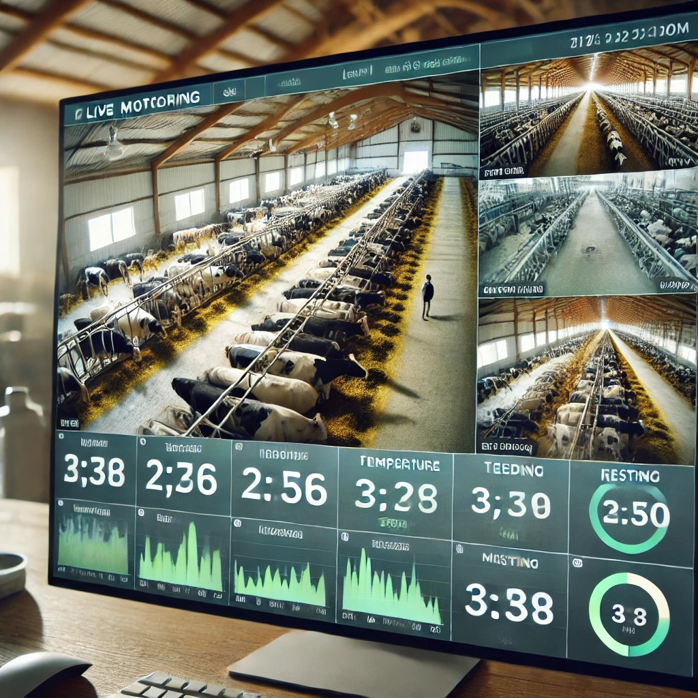
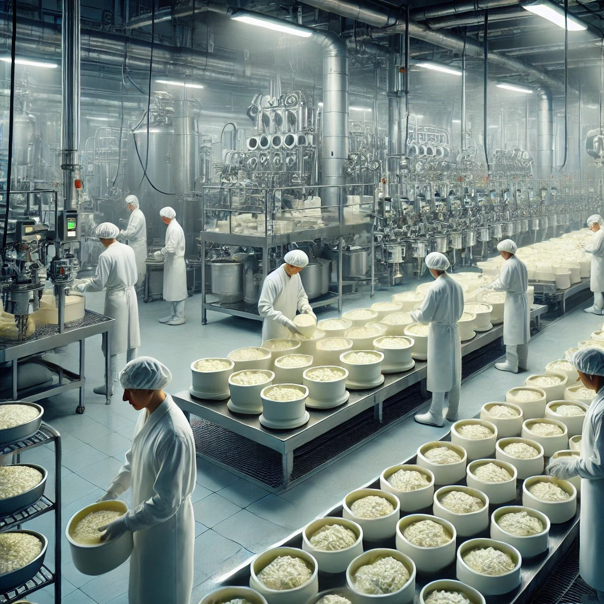
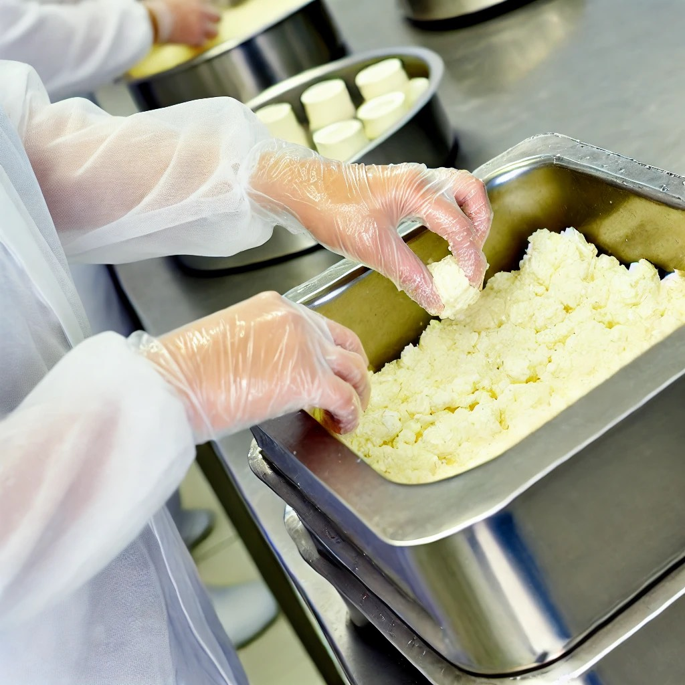
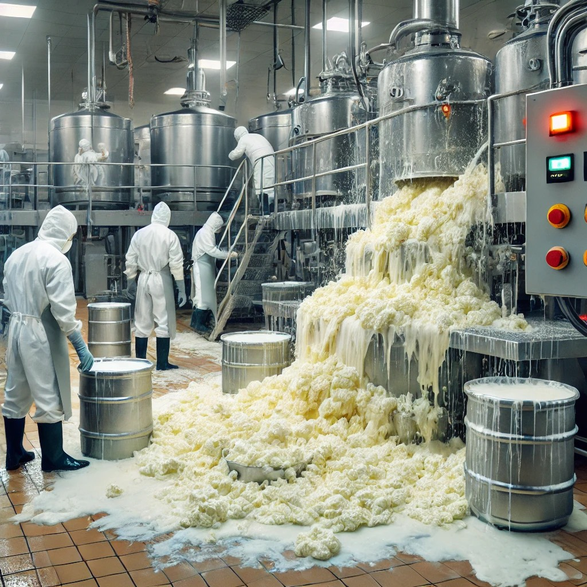

チーズアカデミーTOKYO
〒100-8111 東京都千代田区千代田
00-0000-0000
00-0000-0000
dummy@cheeseacademy.tokyo
ぜひ1度，足を運んでみませんか．説明会は随時開催中．
その他，お問い合わせもお気軽にどうぞ．お待ちしております．
チーズアカデミーは実際には存在しません．
間違っても問い合わせしないようお願いいたします．
特集
チーズの品質管理
チーズの製造の重要ポイント
美味しいチーズを提供するには
原材料の品質管理、温度湿度管理、製造工程管理、が重要です
原材料の品質管理
牛乳など原材料の品質がチーズの味や食感に大きな影響を与えます。
健康的で衛生的な環境で飼育された家畜の牛乳を使用することが重要です。
温度と湿度の管理
発酵や熟成の過程では、温度と湿度が非常に重要です。
低温では発酵が進まず、高温では微生物が過剰に繁殖し、
風味が崩れる可能性があります。適切な温度（通常は10〜15度程度）と
湿度を維持することが必要です。
製造工程の管理
チーズの品質を安定させるためには、
製造プロセスを常に同じ方法で行うことが求められます。
発酵時間、温度、湿度などの条件を細かくモニタリングし、
一定の基準を守ることが必要です。
また、製造工程で何か問題が発生した時は記録を行い
対策を練ることが重要です。
製造熟練度UPゲームはこちら
我々のチーズ製造管理の状況をご報告します
チーズ製造管理ツールによる記録
（現時点ベータ版ツールとなります）

原材料の品質管理：リアルタイム映像による牛の監視映像
牛にストレスがかかっていないか
害獣がいないかの監視中
（将来追加機能：カメラの映像をここに配信連携する）
原材料の品質管理：牛の健康状態チェック
（将来追加機能：AIにより牛の顔から牛の名前を検出し表示、表情から健康状態を判定し自動表示、日々の体調変化はデータベース化）
温度と湿度の管理
（将来追加機能：温度湿度データをサーバに保存し、そこからデータを引っ張り表示する）
製造工程の管理:映像記録

製造工程定点観測
1時間毎の製造工程状態監視
工程で不具合発生していないか確認

製造工程常時監視
作業の状況記録
工程で不具合発生時のエビデンスマネジメント
（将来追加機能：カメラ映像とAIによる作業分析、イレギュラー作業の検出と通知、イレギュラー作業はデータベースへ記録し、振り返ることで工程改善へつなげる）
製造工程の管理:工程不具合発生記録

不具合発生日時：2024.10.26.13:30
不具合状況：かくはん装置に異常が発生し
チーズが装置外に流れ出す現象が発生、原因解析中。
（将来追加機能：製造現場の装置より発信されるアラームをサーバに送る、サーバではそのログを残すとともにカメラで撮影を行いデータベースへ記録する、そのデータを管理者のスマホへ配信する）
将来追加機能はJavaScript,PHPや外部機器連携技術を習得する事により日々追加されていきます
製品リリース2025年3月末